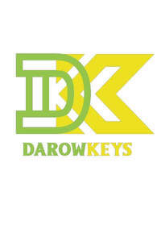
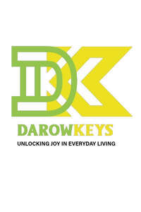

Trade Mark Journal No.2025/036 5 September 2025
UK00004252021 20 August 2025 (3,5,28,30)
Mark 1

Mark 2

- Class 3
- Skin care creams, other than for medical use; Hair care preparations, not for medical purposes; Body care cosmetics; Cosmetics; Skincare cosmetics; Moisturisers [cosmetics]; Cosmetics and cosmetic preparations; Hair cosmetics; Skin fresheners [cosmetics]; Cosmetics for eye-lashes; Cosmetics for suntanning; Anti-aging moisturizers used as cosmetics; Organic cosmetics; Lip cosmetics; Non-medicated cosmetics; Nail cosmetics; Skin moisturizers used as cosmetics; Natural cosmetics; Mousses [cosmetics]; Cosmetics preparations; Tanning gels [cosmetics]; Make-up palettes containing cosmetics; Tanning oils [cosmetics]; Cosmetics in the form of lotions; Beauty care cosmetics; Facial creams [cosmetics]; Colour cosmetics; Self-tanning preparations [cosmetics]; Cosmetics for animals; Suncare lotions [for cosmetic use]; Eyebrow cosmetics; Tanning preparations [cosmetics]; Decorative cosmetics; Multifunctional cosmetics; Milks [cosmetics]; Eye cosmetics; Body creams [cosmetics]; After-sun oils [cosmetics]; Skin masks [cosmetics]; Cosmetics for eye-brows; Tanning milks [cosmetics]; Functional cosmetics; Suntan oils [cosmetics]; Facial gels [cosmetics]; Skin care cosmetics; Fluid creams [cosmetics]; Suntan lotion [cosmetics]; Cosmetics for children; Non-medicated cosmetics and toiletry preparations; Humectant preparations [cosmetics]; Emollient preparations [cosmetics]; Cosmetics in the form of creams; Powder compacts [cosmetics]; Sun-tanning preparations [cosmetics]; Suntanning oil [cosmetics]; Colour cosmetics for the skin; Cosmetic hair lotions; After-sun milk [cosmetics]; After-sun milks [cosmetics]; Cosmetics for use on the skin; Cosmetic moisturisers; Sunscreens [for cosmetic use]; Cosmetic creams and lotions; Bath powder [cosmetics]; Night creams [cosmetics]; Cosmetic products in the form of aerosols for skincare; Sun blocking lipsticks [cosmetics]; Skin recovery creams [cosmetics]; Cosmetics for the use on the hair; Body gels [cosmetics]; Body and facial creams [cosmetics]; Lip stains [cosmetics]; Sunscreen [for cosmetic use]; Sunscreen creams [for cosmetic use]; Cosmetic soaps; Creams (Cosmetic -); Cosmetic creams; Cosmetics in the form of powders; Hair care lotions [for cosmetic use]; Cosmetic skin fresheners; Cosmetics containing keratin; Dyes (Cosmetic -); Cosmetic dyes; Cosmetics containing panthenol; After-sun lotions [for cosmetic use]; Cosmetics in the form of oils; Beauty lotions; Cosmetic facial lotions; Facial lotions [cosmetic]; Nail paint [cosmetics]; Cosmetic suntan lotions; Skin care lotions [cosmetic]; Colour cosmetics for children; Perfume oils for the manufacture of cosmetic preparations; Nail hardeners [cosmetics]; Anti-aging creams [for cosmetic use]; Nail tips [cosmetics]; Tissues impregnated with cosmetics; Sun protecting creams [cosmetics]; Nail primer [cosmetics]; Anti-ageing creams [for cosmetic use]; Smoothing emulsions [cosmetics]; Cosmetic products for the shower; Skin cleansers [cosmetic]; Perfumed powders [for cosmetic use]; Liners [cosmetics] for the eyes; Moisturising skin lotions [cosmetic]; Body and facial gels [cosmetics]; Cosmetic creams for the skin; Skin creams [cosmetic]; Skin creams [for cosmetic use].
- Class 5
- Skin care preparations for medical use; Nail care preparations for medical use; Foot care preparations for medical use; Skin care creams for medical use; Vitamin supplements; Dietary supplements; Nutritional supplements; Herbal supplements; Probiotic supplements; Homeopathic supplements; Chlorella dietary supplements; Flaxseed dietary supplements; Calcium supplements; Anti-oxidant supplements; Colostrum supplements; Protein supplements; Dietary supplements consisting of vitamins; Prebiotic supplements; Lecithin dietary supplements; Food supplements; Mineral dietary supplements; Zinc dietary supplements; Mineral nutritional supplements; Propolis dietary supplements; Acai powder dietary supplements; Liquid dietary supplements; Protein powder dietary supplements; Vitamin and mineral food supplements; Dietary supplements in powder form; Mineral dietary supplements for animals; Dietary supplements with a cosmetic effect; Dietary supplements for medical use; Medicated food supplements; Whey protein dietary supplements; Health food supplements made principally of vitamins; Vitamin supplement patches; Herbal dietary supplements for persons special dietary requirements; Zinc supplement lozenges; Food supplements in liquid form; Fitness and endurance supplements; Food supplements for non-medical purposes; Protein supplement shakes; Dietary supplements for pets in the nature of a powdered drink mix; Antibiotic food supplements for animals; Pine pollen dietary supplements; Diet capsules; Dietary supplements for humans not for medical purposes.
- Class 28
- Toys, games, and playthings; Toys; Games; Toys, games and playthings for pet animals; Puzzles [toys]; Games consoles; Play mats for use with toy vehicles [playthings]; Table-top games; Coin-operated games; Toys and playthings for pets; Action figures [toys or playthings]; Cards [games]; Outdoor toys; Chess games; Hand-held consoles for playing video games; Sports games; Play mats incorporating infant toys [playthings]; Electronic games; Novelty toys for playing jokes; Toys in the form of puzzles; Action toys; Checkers [games]; Checkers games; Model cars [toys or playthings]; Musical games; Toys for pets; Boards games; Play mats for use with toy vehicles; Puzzle mats [toys]; Windup toys; Radio-controlled toys; Portable games and toys incorporating telecommunication functions; Play mats containing infant toys; Mechanical games; Stuffed toys; Crib toys; Cuddly toys; Plush toys; Board games; Parlor games; Toys for babies; Fidget toys; Toys for dogs; Pet toys; Toys and playthings for pet animals; Toys for infants; Toy playsets; Video game apparatus, arcade games, and amusement machines ; Stacking toys; Developmental toys; Party games; Plastic toys; Toy dolls; Building games; Bath toys; Children's toys; Game consoles.
- Class 30
- Bakery goods; Coffee bags; Food seasonings; Rice snacks; Snack food products made from rice flour; Snack food products made from rice; Snack food products made from cereal flour; Snack food products made from maize flour; Food flavourings; Honey [for food]; Glucose for food; Turmeric for food; Mustard for food; Flour for food; Rice-based snack food; Snack food (Rice-based -); Cereal-based snack food; Snack food (Cereal-based -); Syrup for food; Glutamate for food; Oat-based food; Maltose for food; Molasses for food; Wafers [food]; Starch products for food; Flavourings of almond for food or beverages; Confectionery; Chocolate confectionery; Liquorice [confectionery]; Pastilles [confectionery]; Fondants [confectionery]; Lollipops [confectionery]; Chocolate confectionery products; Confectionery chocolate products; Sugar confectionery; Marshmallow confectionery; Sherbets [confectionery]; Sherbet [confectionery]; Chocolate flavoured confectionery; Fruit confectionery; Chocolate-coated sugar confectionery; Chocolate confectionary; Non-medicated confectionery candy; Lozenges [confectionery]; Almond confectionery; Liquorice flavoured confectionery; Flavoured sugar confectionery; Peanut confectionery; Chocolate for confectionery and bread; Mallows [confectionery]; Sesame confectionery; Frozen confectionery; Confectionery (Non-medicated -); Non-medicated confectionery; Low-carbohydrate confectionery; Chocolate confectionery containing pralines; Ginseng confectionery; Confectionery bars; Nut confectionery; Mint for confectionery; Confectionery items formed from chocolate; Non-medicated sugar confectionery; Sugar confectionery (Non-medicated -); Chocolate decorations for confectionery items; Fruit jellies [confectionery]; Jellies (Fruit -) [confectionery]; Confectionery products (Non-medicated -); Chocolate confections; Sweetmeats being candies; Chocolate candies; Chocolate fillings for bakery products; Malt dextrin glazings for confectionary; Peanut butter confectionery chips; Clear gums [confectionery]; Cachou [confectionery], other than for pharmaceutical purposes; Chocolate flavoured beverages; Confectionery having wine fillings; Ice confections; Starch-based candies; Confectionery having liquid fruit fillings; Crystal sugar [not confectionery]; Non-medicated confectionery in the shape of eggs; Chocolate-based beverages; Beverages (Chocolate-based -); Chocolate syrups for the preparation of chocolate based beverages; Sweets; Caramels [sweets]; Sweets (Non-medicated -) being acidulated caramel sweets; Sweets (candy), candy bars and chewing gum; Gum sweets; Sugar-free sweets.
Dale Kenney